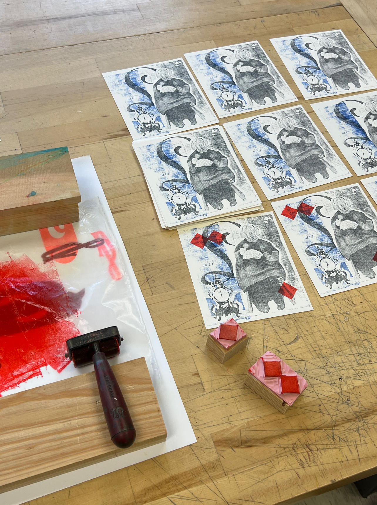

Little Boy Blue
My object of both joy and inspiration is William Wegman’s Mother Goose; a book of staged photographs in which Wegman’s Weimaraner dogs appear in elaborate costumes, often incorporating human hands and feet, to reinterpret classic Mother Goose nursery rhymes.
I actually bought this book when I was 14, so it’s not necessarily nostalgic, but I’m a huge fan of every element of design in this book: layout, type, color, set design, lighting, framing, everything. I think its a spectacle of a well oiled, design machine layered in bizarre yet familiar imagery. It means a lot and is a huge well of inspiration for me.
Laser cutting was a major challenge for me. I cut probably 6 blocks, trying to get a dither and etch depth that I thought would print best (spoiler alert, I was very wrong!) Layer 1 is blue, and consists of the “Little Boy Blue” type and the graphic silhouette behind the clock, although I think both get kind of lost in the texture. What is preserved though, is just that - the texture!
Initially, I was massively disappointed. I wanted clean marks absent of the back block grain but despite sanding, adjusting packing, raising rollers, etc. I not only realized it was a block issue, but realized it could be a valuable block artifact.
Moving onto the key layer, I had a better time printing this without catching the rest of the block; I think due to there being more surface area to print this round. I had to print very very lightly though, and I was having some slight issues picking up the photograph. So, I tore a piece of paper roughly the size of the dog, but also covering the block edges and glued to the bottom of the block. I then sanded the rough edges to give a more organic feel, and this effect completed the ‘frame’ introduced by the blue layer. This is where I became more forgiving of this print, and appreciated the exploratory process - trying to breakdown my graphic design mindset of clean marks and prints identical to digital mockups. This experience meant a lot to me because I want to now seek to embrace these artifacts; I think they show evidence of the hand, the natural, and the physical, and that is what keeps drawing me back to printmaking.
After these 2 layers, I did want something graphic and to call to the physicality of the book. I imagined myself as a dog in one of these images, and what I would do with my hands. While all printmaking is very hands on, I though some kind of carving would allow me to use my hands and all of their capacity the best. I carved 3 linoleum diamonds, to replicate the checkered pattern on the cover. Then, I hand inked and stamped because I wanted each print to be a little different. This was a fun process off of the press, but I did feel like a human Vandercook at times.
Overall, this print was exploratory and enlightening, and strengthened my concept of print media and the artifacts we produce when making by hand.